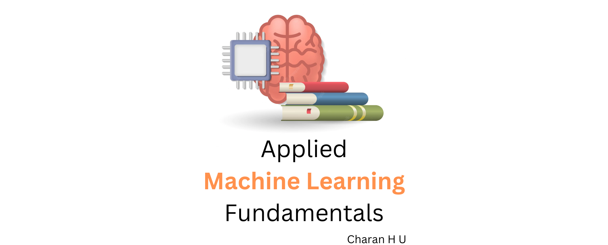

Applied Machine Learning Fundamentals
Contents
Applied Machine Learning Fundamentals#
Applied Machine Learning Fundamentals book covers the basics of machine learning, including supervised and unsupervised learning, and how to apply machine learning to real-world problems. This book is designed for anyone who wants to learn how to apply machine learning to real-world problems. No prior experience with machine learning is required.
It also includes python fundamentals like data structures, functions, and classes. It also includes a brief introduction to the numpy and pandas libraries, which are used extensively in machine learning.

Outcomes of Applied Machine Learning Fundamentals book#
You’ll learn about the foundations of machine learning in this book, along with practical applications. The principles of Python, Numpy, Pandas, Matplotlib, and Scikit-Learn will be clarified in this book. The principles of data science and machine learning will be easier for you to understand after reading this book. Python code examples, definitions, algorithms, and flowcharts will be used to explain the ideas.
About The Author#
Charan H U is a Applied Machine Learning Engineer at TietoEvry (India). With the strong fundamentals in Computer Scienece, Mathematics, Machine Learning, Deep Learning, Data Science, and Python, he is passionate about solving real-world problems using Machine Learning and Deep Learning.
He is also a youtube content creator. You can find his youtube channel here. Where he uploads videos on Machine Learning, Deep Learning, Data Science and Python. He publishes his blog posts on Medium. You can find his blog here. Where he writes about Machine Learning, Deep Learning, Data Science and Python.